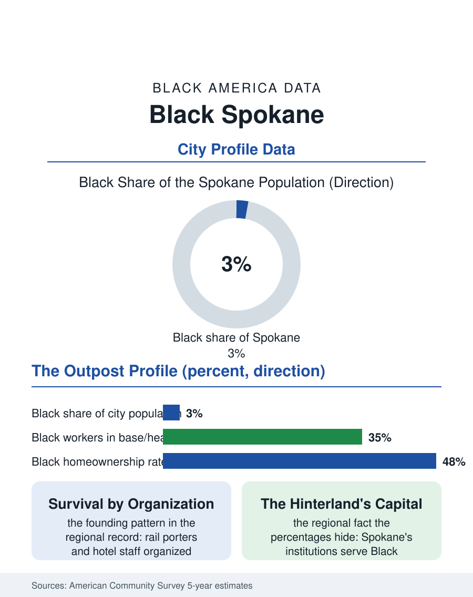

Black Cities
The Northern Outpost: Black Spokane
Three percent of Spokane, and the only Black institutional infrastructure across a three-state northern hinterland. The Spokane file.

Spokane's Black community, roughly seven thousand people in a city of about two hundred thirty thousand, some three percent, is the Inland Northwest's largest, a railroad and military community in a region whose Black history is sparse and specific: the Great Northern and Northern Pacific lines, Fairchild Air Force Base, and the long twentieth century of a small population maintaining itself at the far edge of the Black map. The census counts it as eastern Washington's center of Black life. This article reads the Spokane file.
Railroad Porters and Airmen
The community's founding generation arrived with the rails: porters, cooks, and waiters of the great hotels the railroads built, and the laborers of the region's mines, mills, and farms whose presence the territorial record documents in small, steady numbers. Spokane's Black population organized early beyond its size, its churches and its NAACP chapter dating to the early twentieth century, because the region's racial order, sundown practices in the surrounding towns, discriminatory covenants in the city's own plats, made organization a survival technology rather than a civic hobby. Fairchild Air Force Base, activated in the war years and grown into a tanker and survival-training hub, wrote the modern layer: the federal channel delivering Black airmen and their families to the inland Northwest in every generation since, with the retirees who stayed converting a posting into a population. The East Central neighborhood became and remains the community's heart, its commercial corridor on Fifth Avenue the business district of the classic pattern, while Gonzaga and the other universities and the hospital systems built the professional tier the services economy supports.
The Numbers in the Inland Northwest
The American Community Survey profile shows a small community inside a slow-growing, affordable-by-coastal-standards metro. Employment concentrates in the base and health care, the region's two hospital systems being among its largest employers, education, and the public sector, with median Black household income trailing the metro median in the regional pattern. Homeownership runs comparatively attainable on the metro's price level, and the Black homeowner base in East Central is the community's ballast, now subject to the gentrification arithmetic that follows every affordable district adjacent to a growing downtown and two universities. The population grows slowly, inching upward in share as the metro's overall growth, fed by coastal in-migration, diversifies the city around the community faster than the community itself grows, a dynamic the survey swings record in both directions. The political file reflects scale: representation at the council and school board level in the modern era, a community whose endorsement matters in a city of this size, and a statewide significance larger than its count, since Spokane's is effectively the only Black institutional infrastructure between Seattle and Minneapolis on the northern tier, a fact that makes its churches, its Juneteenth, and its Martin Luther King Jr. center regional institutions for Black families scattered across three states' small towns.
The Northern Tier's Outpost
That regional function is the Spokane file's distinction. The community serves as the reference point, the nearest Black church, barber, and cultural calendar, for a hinterland the size of a European country, a role invisible in the city's own percentages and central in the region's Black experience. The forward file is the metro's: continued growth, the university and medical district expansions, the base's durable mission, and the affordability that keeps drawing the coastal exodus inland, each increment of which lands in a housing market where East Central's future is the contested question. The community's institutions have prepared the file's standard answer, land and housing initiatives, the cultural center's programming, the alumni networks of its schools, organization being, as it has been for a century in Spokane, the technology of a small population that intends to remain one community rather than dissolve into a statistic. The Spokane file closes where the northern plains begin, at the atlas's coldest margin, in a city whose Black seven thousand have maintained the full argument of Black American civic life, church, chapter, corridor, and celebration, at three percent, through winters and decades that emptied other outposts. The census counts the outpost small. The three-state hinterland that drives in for its Juneteenth counts it as the capital.
More in Black Cities
Black Atlanta: Population, Distribution, and Growth of a Black Metropolis
Metro Atlanta holds more than two million Black residents — roughly one in three, second only to New York. The suburban distribution, migration history, and composition of Black Atlanta in the census data.
Black New York: The Largest Black Population in America
The New York metropolitan area holds about 3.4 million Black residents — more than any metro in the nation — and the city itself about two million. The census profile.
Black Washington: The District and the Metro
The Washington metro holds about 1.6 million Black residents, and the District itself — long a majority-Black city — now records a Black share near 41 percent. The census profile.
Source: U.S. Census Bureau, American Community Survey 5-year estimates for Spokane, WA; Washington state historical records.